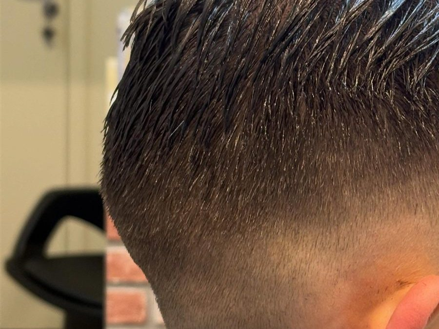

Pezinho (acabamento) em Bragança Paulista
O pezinho (acabamento) na Barbearia do Ju custa R$ 15,00 e leva aproximadamente 15 minutos — serve pra renovar o contorno da nuca e das laterais entre um corte completo e outro.

Quando vale a pena fazer só o pezinho
Se o corte em si ainda está bom, mas o contorno já cresceu e perdeu a linha limpa, o pezinho resolve sem precisar de um corte completo novo.
Frequência recomendada
Costuma ser feito entre 1 e 2 semanas depois do corte principal, dependendo da velocidade de crescimento do cabelo de cada pessoa.
Perguntas frequentes
Quanto custa o pezinho?
O pezinho custa R$ 15,00 e leva aproximadamente 15 minutos.
Com que frequência devo fazer o pezinho?
Em geral, entre 1 e 2 semanas depois do corte completo, conforme o crescimento do seu cabelo.